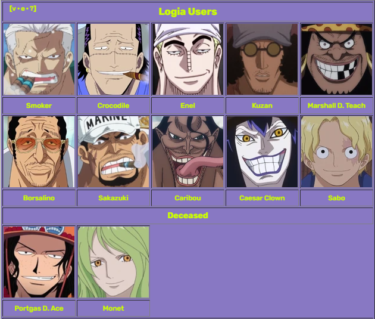
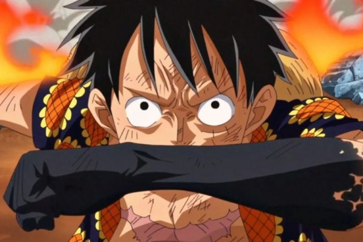

Devil Fruit Logia
Logia Users

Logia Types
• Hie Hie No Mi
(English Versions: Chilly-Chilly Fruit/Ice-Ice Fruit): Allows the user to create, control, and transform into ice. Eaten by Kuzan
• Mera Mera No Mi
(English Versions: Flame-Flame Fruit/Flare-Flare Fruit): Allows the user to create, control, and transform into fire. Eaten by Ace & Sabo
• Goro Goro No Mi
(English Versions: Rumble-Rumble Fruit): Allows the user to create, control, and transform into lightning. Eaten by Enel
• Magu Magu No Mi
(English Versions: Mag-Mag Fruit): Allows the user to create, control, and transform into magma. It has the greatest attack power out of all the Devil Fruits. Eaten by Sakazuki
• Pika Pika No Mi
(English Versions: Glint-Glint Fruit): Allows the user to create, control, and transform into light. Eaten by Borsalino
• Moku Moku No Mi
(English Versions: Smoke-Smoke Fruit/Plume-Plume Fruit): Allows the user to create, control, and transform into smoke. Eaten by Smoker
• Suna Suna No Mi
(English Versions: Sand-Sand Fruit): Allows the user to create, control, and transform into sand. The sand can dehydrate any non-metallic substance it touches. Eaten by Crocodile
• Yami Yami No Mi
(English Versions: Dark-Dark Fruit): Allows the user to create, control, and transform into darkness. The darkness has strong gravitational properties and the user has an infinite amount of space inside of their elemental body. Eaten by Marshall D.Teach
• Gasu Gasu No Mi
(English Versions: Gas-Gas Fruit): Allows the user to create, control, and transform into gas. Eaten by Caesar Clown
• Numa Numa No Mi
(English Versions: Swamp-Swamp Fruit): Allows the user to create, control, and transform into mud. The user is a "bottomless swamp", granting them an infinite amount of space inside their elemental body. The mud can also take on the properties of quicksand. Eaten by Caribou
• Yuki Yuki No Mi
(English Versions: Snow-Snow Fruit): Allows the user to create, control, and transform into snow. Eaten by Monet
Weakness
The power of Logia fruits can give many untrained users the impression that they are invincible in battle, but this is not the case, especially in dangerous areas like the New World that are full of experienced fighters who know a lot about Devil Fruit abilities.
The most common way to bypass Logia protections is by using Busoshoku Haki. Haki does not prevent Logia users from transforming or completely deactivate the transformation; rather, once a Haki-imbued object makes contact with a transformed body, the body part that is struck reverts to its solid form. Thus, a Logia user that is hit with a Haki-imbued attack in their transformed state will be harmed as if they had not transformed.Being in a transformed state may cause the user to expand and occupy a larger surface area than their normal body would, allowing Haki-wielding opponents to strike and injure them with greater ease.

Additionally, Logia users may lose their intangibility when their bodies come into contact with an element that has a special reaction with their element. When struck by said element, they are affected in the same way as when they are hit by Busoshoku Haki. For example, if the Suna Suna no Mi user comes into contact with water, the sand will stick together or harden, thus forcing the user into the tangible state. Another example is when two Logia users clash and one element is naturally superior to the other, as seen when Sakazuki used his magma to injure Ace's fire body.Alternatively, two Logia elements may completely stalemate upon clashing, such as fire and smoke.Other examples of elements being used to cancel out a Logia user's power were when Monkey D. Luffy bypassed Crocodile's sand by coating his body with water,and later blood,as well as when Luffy bypassed Enel's lightning with just his body due to being made of rubber.Logia users may still be able to outlast and overpower opponents who can bypass their intangibility, and they can use Haki themselves, but being able to bypass intangibility significantly improves a person's chances when fighting Logia users, and they may be able to take the Logia user off-guard, especially if the user is overconfident in their ability.
It is possible to trap a transformed Logia user in an enclosed space, especially if their element is solid, and render it difficult to impossible for them to escape. This was seen when the Straw Hat Pirates caught Caribou inside a barrel and bolted it shut, preventing him from escaping until someone else opened it later.Luffy attempted to defeat Crocodile by eating his transformed head and torso, which did disrupt the Warlord although he was able to quickly burst out.Users with solid and rigid elemental transformations, such as ice, are slower to reform when their elemental bodies are attacked and damaged.
A Logia user may be unable to effectively perform and utilize their transformation if they are overwhelmed by an emotion such as fear. This was seen with Monet, who was gripped with fear after Roronoa Zoro bisected her without Haki and was unable to reform her body for a brief time.
For new Logia users, getting used to their ability to transform into a element's can take some time and adjusting. This was seen when Tashigi was transferred into Smoker's body, she couldn't use his Logia abilities effectively with her own fighting style and had trouble controlling his abilities overall. Well more adapted and experience fighters can quickly adjust when they eat a Logia fruit, they will still dodge some attacks on reflex instead of letting them pass through them.
© Made By Yooran Pradiano Ahmad